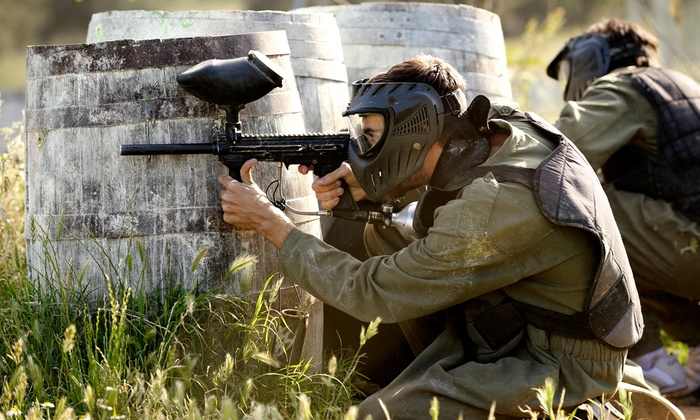

|  |
Get started You pressed this section because ell that will happen sometime in play, you might think that paintball is not a sport, violent, and gun related. But in order for you to see the big picture of this sport, you need to understand this sport. Paintball is a competitive sport involving different physical movements, including running, sliding, climbing, jumping, etc. This sport also involves shooting spherical paint at the opposing team with airguns, or co2 powered guns, this is known as a paintball marker. Players wear protective gear to minimize impact from getting shot at, this is absolutely required. Players could be seriously injured if they don’t wear protective gear. This could happen, it can literally “knock your eye out”. Different games have different map setup, game modes, and type of play. Such as the traditional field, or the modern fields, which is setup using air pumped obstacles. This sports origin goes back to the 1970s, where the first guns were developed for use in forestry and agriculture. Foresters used the guns to mark certain trees (for research, planning trails). The guns were also used by farmers to mark cattle. And later farmers started shooting at each other for sport. But paintball didn’t really fully developed until 1981, where a real team was formed. This sport was than used for military and police practices, the military trained soldiers are trained using paintball for different exercises such as clearing buildings, they also increase the firepower of their equipment to make it as realistic as possible. Mainly, it lets soldiers and the police practice strategy, camouflage and the fine art of not getting shot. Later on the first team of paintball introduced this to the public and started to mass produce paintball equipment. Paintball games have two teams, either capture the flag, capture the checkpoint, or elimination. When players are out, they either are out permanently for the round, or return to the spawn point and get back to the game. Usually competitive paintball organizations and rounds allow one life per round, this makes it very realistic. Different types of arenas have different play style, such as urban, speedball, or in forest areas. Urban would be very similar to airsoft, or involves buildings or bug rooms and walls. Forest areas would be rented for play only, players in his arena would have to hide behind trees and bushes, called woodsball. Speedball is more for competitive paintball organizations such as NXL, each round goes by very fast, and there is always ten players, and instead of wearing camouflage, they were different colors to indicate teams. Speedball also uses airpumped obstacles instead of walls. The military do not use this kind of play, only well known teams and paintball organizations use this kind of play. Paintball players say its a sport because it's really workout. It involves quick thinking under pressure, quick movement, skill, tactics, and instinct. What also makes this sport a sport is team communication, usually communication in sports is verbal. But in this sport, you have to coordinate with your partner by visually seeing their movement and supporting your teammates using tactics in different situations. The only team verbal communication is before a session starts, you can talk about possible tactics that an opponent would use, also teammates have different roles, so you would have to coordinate with other teammates role in order to out gun an opponent and advance to reach the other side, or whatever the game mode. Also people may think it’s violent, its gun related. Sure, the military uses this sport for military drills, but there is a difference between these drills than the sport itself. The military and the police increase the power of the paintball marker to make it more realistic. But the sport common people play has less war aspects, you can rush to your opponent and get him out by surprising them while they are under your friends cover fire. This cannot be done in military drills, since in military arenas, platoons, or large groups of soldiers can cover fire and is hard to break front lines. Supply if your interested (Go to Safety and equipment section for the same paragraph) Paintball is sure considered an expensive sport. For starters, you have to reserve a location, purchase fees, rent fees, and the cost for your first game may range anywhere from $20 to $140. Also to get your own paintball supplies it would be expensive, guns vary in different prices with different qualities, the range of price is a little less than $99 to a little more than $300. $99 markers are usually the normal traditional ones. Tippmann markers (Ones that look like real guns) usually vary from $109 to about or more than $200! On Amazon, a paintball kit for beginners contains a tippmann marker, hopper, reload clip, reload belt, pipe and co2 tank can vary from $150 to more than $200. For professionals and people who are getting serious on paintball tournaments, I would recommend the Empire Axe. This marker is $350 itself, the reason why it’s expensive is it can switch through single fire, burst, and full auto. With an e-trigger it makes it very expensive. Helmets depends on its quality, high quality helmets can vary from $79 and $99 to something like $200. For full protection that protects the back of your head, the price is $25 to $50. For vests the price is $20 above. Also 2000 paintballs on Amazon is $37 to $45. Rental prices, including entry, marker, mask, vest, and suit can vary in different countries. Let’s take The Shack for example. Rental packages vary from $25 to $40, and a minimum of 500 paintballs is $20. |